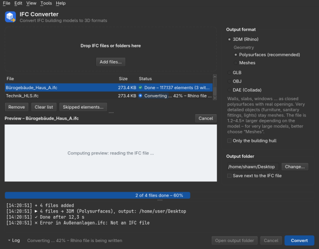
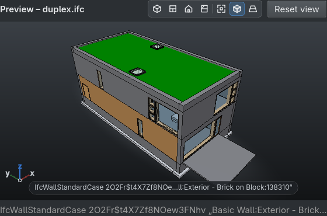

|
IFC Converter User Guide · Version {version} Convert IFC building models to Rhino (3DM), GLB, OBJ and DAE – exact dimensions, no changes to the IFC, safe to run beside your other programs. |
Windows 10/11 and Linux · no administrator rights needed · no internet connection used · {date}
|
Contents 1. What it does |
5. Large models |
The IFC Converter turns IFC building models into 3D files for Rhino, Blender, SketchUp, ArchiCAD or any web viewer. Output is always in metres, positions and dimensions match the IFC exactly. The IFC file is never modified, existing output files are never overwritten.
| Input | IFC2x3, IFC4, IFC4.3 (also IFC2x2 and the IFC4x4 draft); .ifc and packed .ifczip. ifcXML is not supported. |
| Output | Rhino .3dm (polysurfaces or meshes, layers by storey and element class, IFC data as user text) · GLB (web viewers, Three.js, Blender, game engines) · OBJ + MTL (almost every 3D program) · DAE (Collada: SketchUp, ArchiCAD) |
| Accuracy | Flat geometry exact to the vertex (deviation below 0.001 mm in 3DM and OBJ); curved surfaces faceted with chords of at most 0.25 mm. Georeferenced models keep full precision. |
| Safety | Runs at low priority in its own process, uses at most about half the CPU cores and (on Windows) 85 % of the memory. No services, no autostart, no background updates. |
| Windows – installer | Double-click IFC-Converter-{version}-Setup.exe. Installs for the signed-in user only (no administrator rights), with a Start menu entry. To update, run the installer of the new version; settings are kept. Uninstall via Windows Settings → Apps. |
| Windows – portable | Unpack IFC-Converter-{version}-portable.zip anywhere (for example into Documents) and start IFC Converter.exe. Nothing is installed. |
| Windows SmartScreen | The program is not code-signed, so the first start shows “Windows protected your PC”. Click “More info” → “Run anyway”. If the company virus scanner blocks the program, ask IT for an exception for the program folder. |
| Linux | Unpack IFC-Converter-{version}-linux-x86_64.tar.gz and run ./install.sh (installs under ~/.local, no root). uninstall.sh removes it again. |
SHA256SUMS.txt in the release lists the checksums of all files.
 |
| The window: file list and 3D preview on the left, output format and folder on the right, log at the bottom. |
The checkbox “Only the building hull” converts only what is seen from outside: exterior walls, roofs, windows, doors, balconies, terrain. Interior walls, floors, furniture, sanitary fittings and building services are left out, so the file gets much smaller – meant for context models and weaker PCs. Elements are only left out, never changed; glass counts as opaque. A coarse pass determines the hull first, so small models take somewhat longer.
 |
| Preview with the view bar in the header, edge lines, axis triad and a clicked element. |
The preview starts on its own when the free memory has room for the file, otherwise on request (“Compute preview”). Reading the IFC file takes about 35 s per 600 MB; after that the picture grows every few seconds, structure first (terrain, slabs, roofs, walls, columns, beams, stairs, façades, windows, doors). Furniture, building services, fasteners and reinforcement are left out of the preview; the line under the view says how many. A computed preview is kept and appears at once next time. Without graphics acceleration (remote desktop, virtual machine) the program draws in software automatically.
| Action | Control |
|---|---|
| Orbit | drag with the left mouse button (around the clicked point) |
| Pan | drag with the middle or right button, or Shift + left button |
| Zoom | mouse wheel (towards the cursor); double-click or F shows the whole model |
| Views | keys 1–4 or the view bar: Iso, Top, Front, Side; Home = start view |
| Element info | click an element to see class, GlobalId and name; Esc clears the selection |
| Display | view bar buttons for edge lines on/off (E) and perspective/parallel projection (P) |
Menu Tools → Language: English (default), German, French, Spanish, Italian, Portuguese, Dutch, Polish, Turkish. After choosing, the program offers to restart. Output files are not translated.
|
How to report a problem
The log is always anonymised: it contains no user, computer, server, folder, file or element names – only times, sizes, numbers and the program's messages. It stays on your PC until you pass it on yourself. |
Next to the program there is ifc-convert.exe (Linux: ifc-convert) with the same options as the window:
| ifc-convert house.ifc -f 3dm -g mesh | Rhino file with meshes |
| ifc-convert *.ifc -d output\ | several files into one folder |
| ifc-convert house.ifc --envelope | only the building hull |
| ifc-convert house.ifc -f glb --lang de | GLB, German messages |
| ifc-convert --help | all options |
IFC Converter {version} · Geometry by IfcOpenShell and OpenCASCADE · Output in metres, positions as in the IFC.